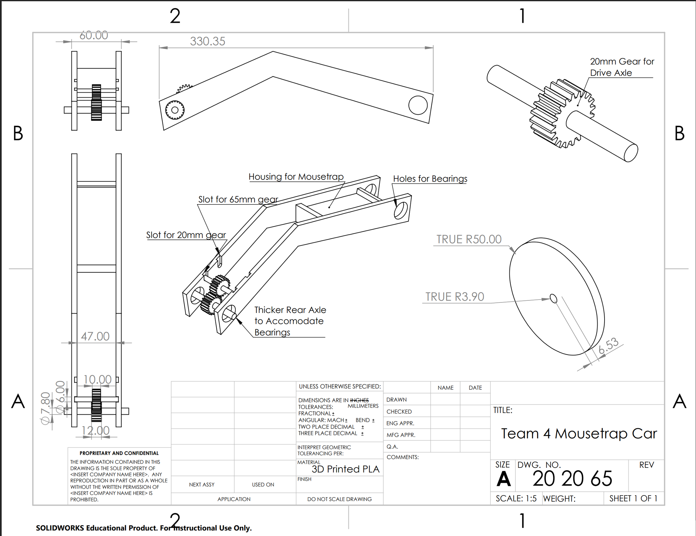
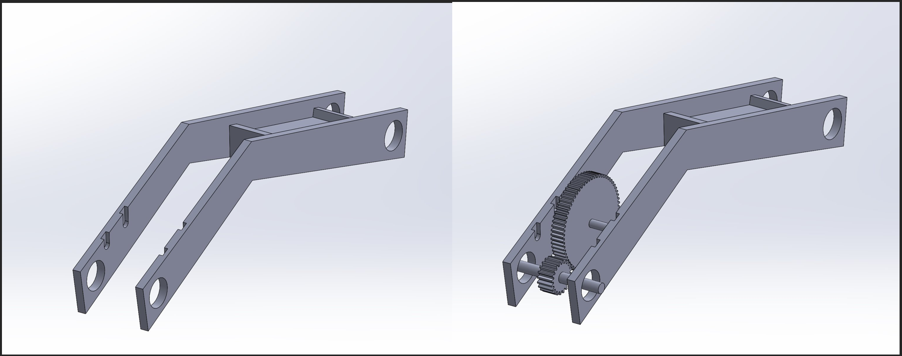
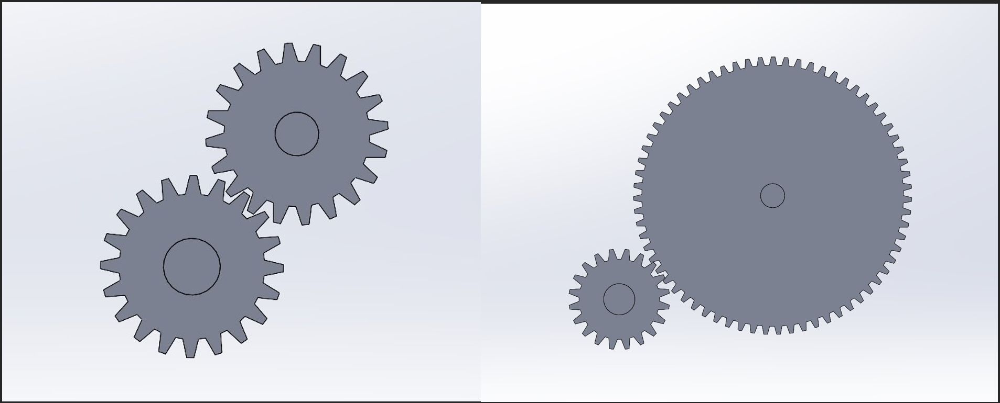
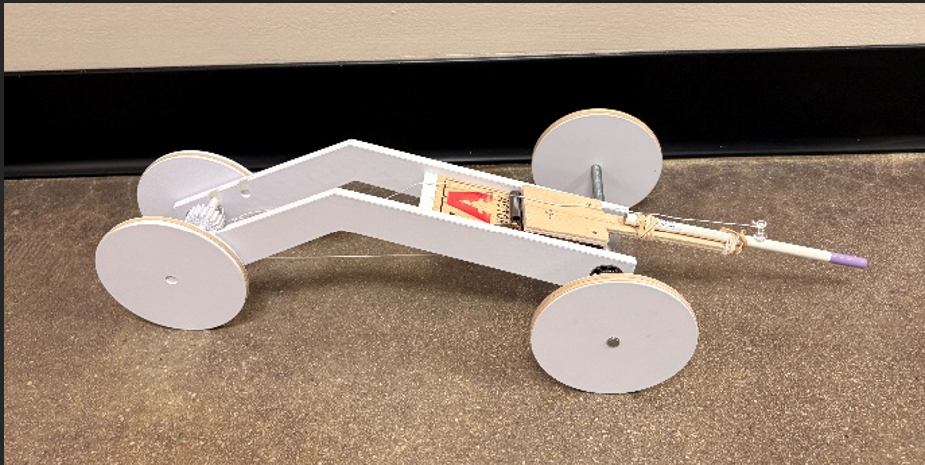

Mousetrap Car Competition
Designing and building a car powered by a mousetrap spring, designing for both speed and distance by including a simple transmission in the plans.
Photo Gallery
CAD renders and a photo of the mousetrap car



Design process
Airfoil selection & 2D theory
Working through low-Reynolds-number airfoil behavior and multi-element airfoil design using XFLR5 and the UIUC Selig airfoil database, referencing McBeath's Competition Car Aerodynamics for FSAE-specific ground-effect and wing-package guidance.
3D modeling in SolidWorks
Modeled the wing as a twisted airfoil along a nonlinear span using Lofted Boss/Base with leading- and trailing-edge guide curves and Pierce constraints at each spanwise station.
CFD validation in ANSYS Fluent
2D and full-vehicle CFD sweeps in Fluent (steady and transient RANS; k–ω, k–ε, and Transition SST turbulence models) to validate lift and drag coefficients before committing to a final geometry.
3D aero map
A full-factorial CFD sweep across yaw, speed, and front wing ride height, interpolated in MATLAB, to capture how the car's aero performance actually changes through a lap — not just at one design point.
Interactive aero map
Placeholder — embeds once the sweep is completeThis section will hold an interactive 3D aero map: query lift and drag coefficients across yaw, speed, and front wing ride height, built from the Fluent CFD sweep and MATLAB interpolation pipeline.
Cross-section flow visualization
Placeholder — video/slideshow to comeAn interactive slideshow moving through cross-section planes of the full car, showing how the front and rear wings shape the flow field around the whole vehicle rather than in isolation.
Notes along the way
- Yaw angle isn't the same as turn radius — the correct CFD input (sideslip angle β) depends on both speed and turn radius together, via a bicycle model.
- Oscillating CFD residuals don't always mean the solver failed — at FSAE Reynolds numbers, a bluff body can genuinely have no steady-state solution.
- A single-variable sweep can't support a 3D interpolated map — a full factorial design is needed to capture how variables interact.